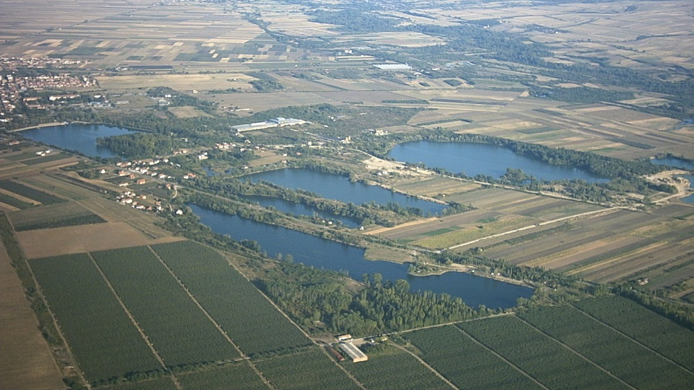

-Belocrkvanska kotlina je smeštena između Vršačkih planina na severu, Dunava na jugu i Karpatskih planina na istoku.
-Otvorena je prema zapadu - Panonskoj niziji.
-Vetrovi su u kotlini navejali les i pesak.
-Les pokriva sve niže predele, dok je pesak navejan na zapadnoj strani u obliku dugačkih dina u pravcu jugoistok-severozapad.
-Ovaj pesak odvaja Belu Crkvu od Deliblatske peščare.

Interaktivna mapa